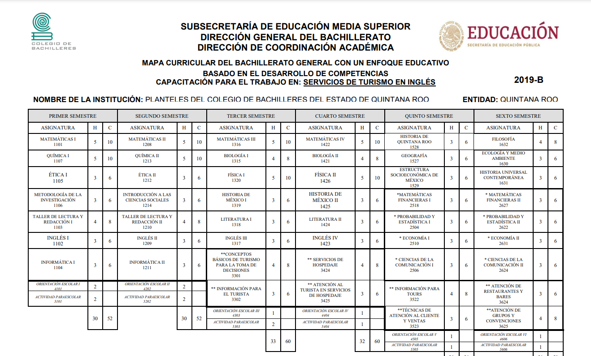

Nuestro plantel cuenta con 5 diferentes tipos de capacitaciones enfocadas en el estudio y preparacion para el area laboral y el interes de la futura carrerra de todas y todos los alumnos, a continuacion en este apartado encontraras inforcacion acerca de ellas
Esta capacitacion esta enfocada en el turismo en ingles y esta basada en las ciencias sociales
En esta capacitación conocerás todo lo relacionado con el turismo en general y sobre cómo esta actividad es una de las fuentes generadoras de riqueza, crecimiento y desarrollo sostenible para cualquier país, región o comunidad.
su proposito es la valoracion del area turistica, implementando tecmicas de comunicacion y linguistica en un marco nacional para solventar requerimientos del turista

La capacitación en contabilidad ofrece las competencias profesionales que permiten al estudiante aplicar las normas de información financiera que emita el Instituto Mexicano de Contadores Públicos, en el manejo del proceso contable en operaciones especiales, en la aplicación, y en la elaboración de papeles de trabajo
La capacitación de Comunicación ofrece las competencias profesionales que permiten al estudiante desarrollar conocimientos, habilidades y actitudes necesarios para generar la comunicación de la empresa y producir medios de comunicación considerando las leyes que la rigen
La Capacitación para el trabajo en Administración se ubica dentro del Campo de las Ciencias Sociales, ya que le permite al alumnado representar la realidad de su entorno social, para transformarla mediante la apropiación de conocimientos, el descubrimiento de significados, la generación de ideas y trasmitirlas eficazmente.
Con la capacitación de Administración se busca que la persona que egresa adquiera los conocimientos, habilidades, destrezas y actitudes, es decir, aquello que las y los haga competentes para desarrollar una actividad en su vida laboral. El instituto del CONOCER coordina y promueve el Sistema Nacional de Competencias para que México cuente con personas trabajadoras y empleadoras que desarrollen los mismos estándares de competencia, logrando un impacto en las actividades prioritarias del sector productivo, social, educativo o de gobierno a través de normas de certificación.
La capacitación en Tecnologías de la Información y Comunicación pertenece al campo disciplinar de Comunicación, tiene la finalidad de desarrollar en el estudiantado las habilidades comunicativas, verbales y no verbales para expresarse a través de diversos códigos y herramientas del lenguaje a través de las diferentes tecnologías de la información. Por otra parte, las Tecnologías de la Información y Comunicación se vinculan de manera interdisciplinar tanto con el campo de las Matemáticas como con el de Comunicación, ya que aportan los elementos para la resolución de problemas mediante los algoritmos y la programación. El propósito general de la capacitación de Tecnologías de la Información y Comunicación es desarrollar la capacidad para proponer soluciones a problemas del contexto laboral y escolar, mediante la aplicación de las Tecnologías de la Información y de la Comunicación, de forma creativa e innovadora, con una postura ética y responsable como ciudadano digital. El uso de las Tecnologías de la Información y Comunicación, desde esta capacitación, destaca el manejo avanzado de las aplicaciones de software y hardware para la resolución de problemas de los diferentes ámbitos de la vida cotidiana, desarrollando los aspectos metodológicos, creativos y comunicativos, sin olvidar un comportamiento propositivo en beneficio personal y dentro de la sociedad. La capacitación de Tecnologías de la Información y Comunicación busca desarrollar en el alumnado las competencias profesionales en las áreas de aplicaciones de oficina, los elementos de hardware, las comunicaciones mediante las redes informáticas, el desarrollo de sistemas y software de diseño, sin olvidar la promoción de las competencias genéricas, interdisciplinariedad y los ejes transversales de vinculación laboral, emprendimiento así como la continuación de estudios a nivel superior.